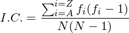
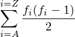

重合指数
重合指数简介¶
重合指数是衡量频率分布和均匀分布相似程度的度量。频率分析是经典密码分析里的重要工具，如果我们分别使用替换密码和维吉尼亚密码加密一段文本，我们可以发现维吉尼亚的频率分布更加平坦，而替换密码的频率分布更加“粗糙”。而重合指数正是将频率分布这种直观的视觉转换为数字表达式。

如果频率分布非常“粗糙”，重合指数会较高。如果频率分布非常平坦，重合指数会更低。
如果一段英文文本使用替换密码加密，那这段密文的IC（重合指数）不会改变（如上图）。
重合指数
IC（重合指数）的定义为：

其中fi是密文中字母i的计数（其中i = A，B，...，Z），N是密文中的字母总数。
A Measure of Roughness¶
假设我们有一段大概1000个字符的英文文本，我们可以推断出字母E出现的次数约为127次（字母E的概率为12.7%，见频率分析小节），即：

我们还有一个前提就是所有的概率之和为1：

如果密文中所有的字母都以相同的频率出现，则每个字母出现的概率都为1/26（或者说是0.0385），这将得到完全平坦的频率分布。字母E出现的概率和预期概率之差为PE - (1/26) = 0.127-0.0385 = 0.0885。
我们可以通过这种方式计算所有字母的差异之和，但这里会出现一个问题就是有些字母会产生正差异、有些字母会产生负差异，这意味着总差异会相互抵消，最终结果都为0.

为了解决这个问题，我们可以对差异进行平方化处理，确保差异之和始终为正，我们将其称之为M.R.（A Measure of Roughness）：

可以化简为：

即：

又所有字母Pi之和为1，故：

重合指数的实质
这个公式究竟意味着什么呢？
PA是随机选择字母A的概率，而P2A是随机选择两个字母都是A的概率，同样P2B是随机选择两个字母都是B的概率。如果想知道随机挑选的两个字母是同一字母的话，我们可以这样计算：

通过这一点我们可以近似计算M.R.。如果一段密文中有10个A，第一次可以从10个A中选择，第二次仅剩下9个A供选择。这意味着有10*9种不同的方式选择A。在这个计数中，每对均被统计了两次，所以最终的数值为½(10*9)。
因此统计密文中A对的计算方法为fA(fA-1)/2，同样随机选择两个字母均为B的数量为：fB(fB-1)/2
那我们可以推导出随机选择两个字母，且两个字母相同的公式为：

如果我们的密文中有N个字母，则总共有N(N-1)/2个选择2个字母的方式。2个字母相同的可能性是选择2个相同字母的方式的总数除以选择2个字母的方式。

这代表了两个字母相似的可能性，也就是IC（重合指数）
重合指数程序实现¶
注意
请注意：以后在程序中引用IndexCoin，均指的是该文件。
### ### FileName:IndexCoin.py ### Date:2018-08-07 ### Time:12:33 GMT ### Author:nianhua ### def Index_of_Coincidence(string): cipher = '' IC = 0 alpha = {'a':0,'b':0,'c':0,'d':0,'e':0,'f':0,'g':0,'h':0,'i':0,'j':0,'k':0,'l':0,'m':0,'n':0,'o':0,'p':0,'q':0,'r':0,'s':0,'t':0,'u':0,'v':0,'w':0,'x':0,'y':0,'z':0} for i in string: if i.isalpha() == True: cipher += i.lower() N = len(cipher) N = float(N*(N-1)) for i in cipher: alpha[i] += 1 for i in alpha: i = alpha[i] IC += i*(i-1) IC = IC/N return IC
重合指数计算举例¶
举例
请计算以下两段密文的IC（重合指数）。
替换密码：
wmzfxtdhzfngfwxwnwxjevxdmzoxfkvxdmzowmkwmkfgzzexenfzpjotkebmneloz lfjpbzkofxwvjefxfwfjpfngfwxwnwxeszyzobdhkxewzawvmkokvwzopjoklxppz ozewvxdmzowzawvmkokvwzoxwlxppzofpojtvkzfkovxdmzoxewmkwwmzvxdmzokh dmkgzwxfejwfxtdhbwmzkhdmkgzwfmxpwzlxwxfvjtdhzwzhbrntghzl
维吉尼亚密码：
vptzmdrttzysubxaykkwcjmgjmgpwreqeoiivppalrujtlrzpchljftupucywvsyi uuwufirtaxagfpaxzxjqnhbfjvqibxzpotciiaxahmevmmagyczpjxvtndyeuknul vvpbrptygzilbkeppyetvmgpxuknulvjhzdtgrgapygzrptymevppaxygkxwlvtia wlrdmipweqbhpqgngioirnxwhfvvawpjkglxamjewbwpvvmafnlojalh
使用上一小节的重合指数计算程序即可：
from IndexCoin import * print Index_of_Coincidence('vptzmdrttzysubxaykkwcjmgjmgpwreqeoiivppalrujtlrzpchljftupucywvsyiuuwufirtaxagfpaxzxjqnhbfjvqibxzpotciiaxahmevmmagyczpjxvtndyeuknulvvpbrptygzilbkeppyetvmgpxuknulvjhzdtgrgapygzrptymevppaxygkxwlvtiawlrdmipweqbhpqgngioirnxwhfvvawpjkglxamjewbwpvvmafnlojalh') print Index_of_Coincidence('wmzfxtdhzfngfwxwnwxjevxdmzoxfkvxdmzowmkwmkfgzzexenfzpjotkebmnelozlfjpbzkofxwvjefxfwfjpfngfwxwnwxeszyzobdhkxewzawvmkokvwzopjoklxppzozewvxdmzowzawvmkokvwzoxwlxppzofpojtvkzfkovxdmzoxewmkwwmzvxdmzokhdmkgzwxfejwfxtdhbwmzkhdmkgzwfmxpwzlxwxfvjtdhzwzhbrntghzl')